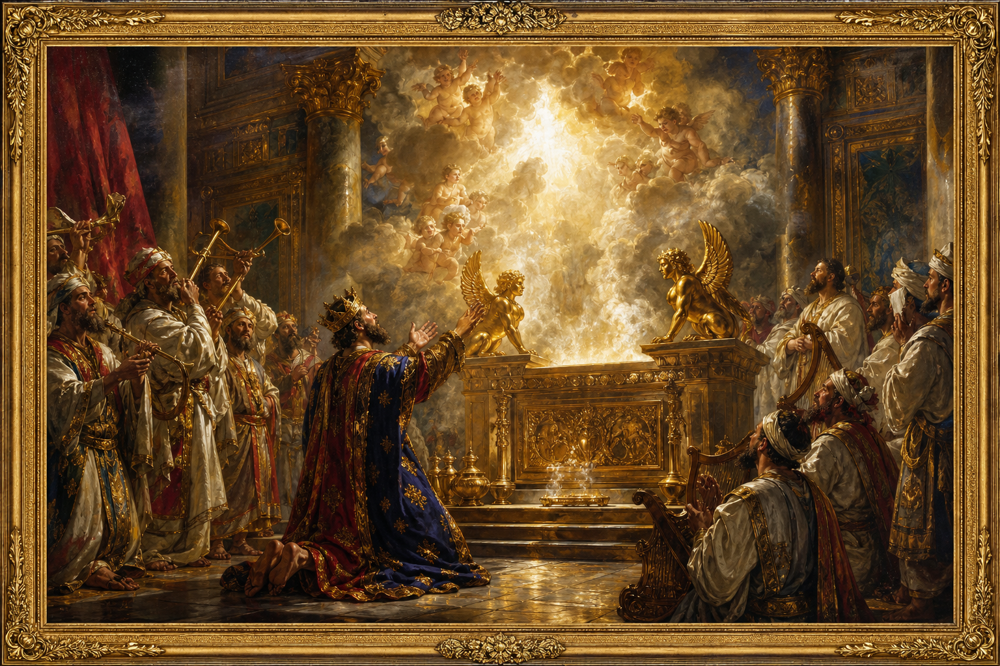

Old Testament · Book 14 of 39
2 Chronicles
Solomon builds the temple in splendour, and a line of kings after him is measured again and again by one question: did they seek the LORD with a whole heart?
2 Chronicles picks up where 1 Chronicles ends, tracing the kings of Judah from Solomon to the Babylonian exile, with the temple in Jerusalem standing at the centre of the whole story as the place where a Living God chose to dwell among his people.
If my people, which are called by my name, shall humble themselves, and pray, and seek my face, and turn from their wicked ways; then will I hear from heaven, and will forgive their sin, and will heal their land.
What happens in 2 Chronicles
The book opens with Solomon asking God for wisdom rather than riches, and God granting him both. Solomon then builds the temple in Jerusalem — a project described in rich detail, from the cedar beams to the gold overlay to the bronze sea and the cherubim guarding the ark. When the ark is brought in, the glory of the LORD fills the house so powerfully that the priests cannot even stand to minister, and Solomon prays a long dedication prayer asking God to hear his people whenever they turn back to him in that place, wherever they are scattered. After Solomon's death and the kingdom's division, 2 Chronicles follows only the southern kingdom of Judah, told as a series of royal report cards: kings like Asa, Jehoshaphat, and Hezekiah who tear down idols, repair the temple, and call the nation back to worship, often experiencing dramatic deliverance when they trust God in the face of impossible odds; and kings like Ahaz and Manasseh who fill the temple with idols and lead the nation into ruin, though even Manasseh, in his lowest moment, humbles himself and is restored. The book ends in heartbreak and hope together: Jerusalem and the temple are destroyed and the people carried off to Babylon for their persistent unfaithfulness, yet the very last verses record King Cyrus of Persia proclaiming that the exiles may return and rebuild the house of the LORD — closing the book, and the Hebrew canon, on a note of future restoration.
Why it matters
2 Chronicles was written to show a returning, rebuilding people what genuine covenant faithfulness looks like and why it matters so much to their God. Again and again a king's willingness to seek the LORD wholeheartedly brings deliverance, while pride and idolatry bring ruin — not because God is distant or keeping score from afar, but because he is a Father who longs for his children to walk closely with him. The temple at the heart of the book, filled with the LORD's own glory, points forward to the far greater dwelling of God with his people secured through Christ, in whom every promise of restoration finds its lasting fulfilment.
Jump to a chapter
2 Chronicles has 36 chapters — select one to begin reading there.